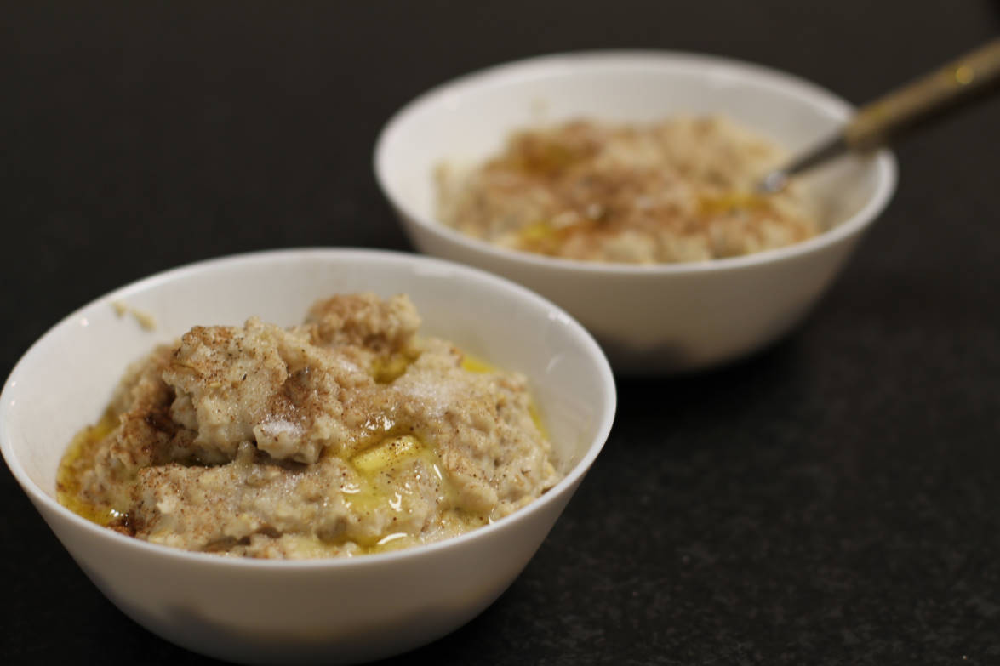

Havregrøt (Oatmeal)
metadata
Created on 2020-04-13 Last updated on 2020-05-16
Recipe should yield this much: 648 g.
Estimated time needed: At least 16 minutes. At most 16 minutes.
Ingredients
| 600 | g | milk | ||
| 140 | g | oats | Rolled or instant oats. Use instant oats if you want a more mushy result, or rolled oats if you want the resulting porridge to have more texture/be more chewy. | |
| 1.5 | g | salt | 1.5 g is about a quarter of a teaspoon (assuming 1 tsp ≈ 6 g). |
Scaling
Timeline
Directions
⌛ Active time 10 minutes
- 600 g milk
Boil milk:
Bring the milk to a boil over medium heat. Remember to stir so that it doesn't become burned.
⌛ Active time 5 minutes
- 140 g oats | Rolled or instant oats. Use instant oats if you want a more mushy result, or rolled oats if you want the resulting porridge to have more texture/be more chewy.
- 1.5 g salt | 1.5 g is about a quarter of a teaspoon (assuming 1 tsp ≈ 6 g).
Add oats:
Add oats and a pinch of salt. Stir and let thicken until you reach a consistency you like.
⌛ Active time 1 minutes
Serve with butter:
Brown sugar and cinnamon are also good additions.